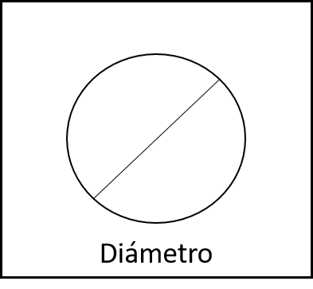
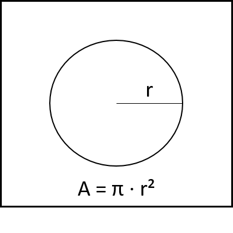
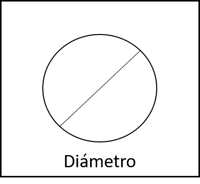
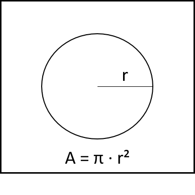

Matemáticas
CÓMO CALCULAR EL ÁREA DE UN CÍRCULO
Para calcular el área de un circulo primero debemos tener en cuenta cierta información:
Empezamos diciendo que un circulo es una figura geométrica plana en dos dimensiones. Es una superficie que esta contenida por una circunferencia esta es una curva cerrada, una elipsis cuyos puntos son equidistantes de otro punto que se denomina centro. Debemos saber también que el circulo esta conformado por otros elementos muy importantes los cuales son:
Centro. Es un punto que se encuentra a la misma distancia de todos los puntos que forman la circunferencia.
Radio. Es cualquier segmento que une el centro con la circunferencia. Este elemento será clave a la hora de calcular el área del círculo.
Diámetro. Es cualquier segmento que une dos puntos de la circunferencia pasando por el centro del círculo. Mide siempre el doble que el radio.
Perímetro. Es la longitud del contorno del círculo, es decir, la longitud de la circunferencia.

En un circulo el numero π , una de las constantes mas importantes en las matemáticas es muy fundamental para el calculo su área. Se trata de una constante que aparece de forma recurrente a lo largo de la historia del cálculo y que es clave para definir la relación entre una circunferencia, el diámetro y, como consecuencia, el área de un círculo. Entonces tenemos que el área es igual al número π multiplicado por el radio elevado al cuadrado. Es decir: A = π · r²  Un ejemplo sencillo de como calcular el área de un circulo es el siguiente: Si tenemos un círculo con un diámetro de 2 metros entonces su radio seria de 1 metro. Elevamos el radio al cuadrado y su resultado sería 1, luego lo multiplicamos por el número π y obtendríamos el resultado final.
A = π · r²
A = π · 1²
A = π · 1
A = 3,14 m²
El área de nuestro círculo mediría 3,14 (π) metros cuadrados.
Calcula Aquí : Área de un Círculo.
Para calcular el área de un circulo primero debemos tener en cuenta cierta información:
Empezamos diciendo que un circulo es una figura geométrica plana en dos dimensiones. Es una superficie que esta contenida por una circunferencia esta es una curva cerrada, una elipsis cuyos puntos son equidistantes de otro punto que se denomina centro. Debemos saber también que el circulo esta conformado por otros elementos muy importantes los cuales son:
Centro. Es un punto que se encuentra a la misma distancia de todos los puntos que forman la circunferencia.
Radio. Es cualquier segmento que une el centro con la circunferencia. Este elemento será clave a la hora de calcular el área del círculo.
Diámetro. Es cualquier segmento que une dos puntos de la circunferencia pasando por el centro del círculo. Mide siempre el doble que el radio.
Perímetro. Es la longitud del contorno del círculo, es decir, la longitud de la circunferencia.

En un circulo el numero π , una de las constantes mas importantes en las matemáticas es muy fundamental para el calculo su área. Se trata de una constante que aparece de forma recurrente a lo largo de la historia del cálculo y que es clave para definir la relación entre una circunferencia, el diámetro y, como consecuencia, el área de un círculo. Entonces tenemos que el área es igual al número π multiplicado por el radio elevado al cuadrado. Es decir: A = π · r²  Un ejemplo sencillo de como calcular el área de un circulo es el siguiente: Si tenemos un círculo con un diámetro de 2 metros entonces su radio seria de 1 metro. Elevamos el radio al cuadrado y su resultado sería 1, luego lo multiplicamos por el número π y obtendríamos el resultado final.
A = π · r²
A = π · 1²
A = π · 1
A = 3,14 m²
El área de nuestro círculo mediría 3,14 (π) metros cuadrados.
El área de un rectángulo se calcula a partir de los dos lados diferentes (a y b). Es el producto de los dos lados contiguos del rectángulo.
A = a x b
Siendo a y b dos lados diferentes Un ejemplo sencillo seria si tenemos un rectángulo cuyos lados (a y b) tienen una longitud de: a=3 cm y b=5 cm.
El área del rectángulo será el producto de los dos lados diferentes, es decir:
El área del rectángulo de lados a=3 cm y b=5 cm es de 15 cm2.
Calcula Aquí : Área de un Rectágulo.
A = a x b
Siendo a y b dos lados diferentes Un ejemplo sencillo seria si tenemos un rectángulo cuyos lados (a y b) tienen una longitud de: a=3 cm y b=5 cm.
El área del rectángulo será el producto de los dos lados diferentes, es decir:
El área del rectángulo de lados a=3 cm y b=5 cm es de 15 cm2.
El triángulo rectángulo es aquel triángulo que tiene un ángulo interior que es recto, es decir, un Angulo que mide 90°.
La principal característica del triángulo rectángulo es que tiene un lado de mayor longitud el cual se denomina “hipotenusa” y otros dos lados de menor longitud denominados “catetos” cuya unión forman el ángulo recto. Se debe mencionar que cualquier cuadrado divido en dos por una de sus diagonales da como resultado a dos triángulos rectángulos iguales.
El triángulo rectángulo esta conformado por los siguientes elementos:
Vértices: A, B, C.
Lados: AB, BC, AC, donde AC es la hipotenusa y AB y BC son los catetos.
Ángulos interiores: 90°,β,γ. Los tres deben sumar 180º.
Ángulos exteriores: 90°,δ,ε. En donde see debe cumplir lo siguiente:
90º+β+γ=180º, β+γ=90º
β+δ=180º
γ+ε=180º
Tipos de triángulo rectángulo
Según la longitud de sus lados, un triángulo rectángulo puede ser de dos tipos:
Isósceles: Cuando sus dos catetos son iguales, lo que implica que sus ángulos interiores son 90º, 45º y 45º.
Escaleno: Cuando en sus lados todos tienen distinta longitud.
Un triángulo rectángulo no puede ser equilátero porque uno de sus lados (la hipotenusa) mide siempre más que los otros dos.
El cálculo del área de un triángulo rectángulo corresponde a la mitad del producto de sus lados o catetos a y b que forman el ángulo recto. La fórmula matemática será:
Donde:
a es el lado que coincide con la altura.
b es la base.
A es el área.
Ejemplo : el área del triángulo rectángulo de lados 3, 4 y 5 es 6 ya que :
Calcula Aquí : Área de un Triángulo.
La principal característica del triángulo rectángulo es que tiene un lado de mayor longitud el cual se denomina “hipotenusa” y otros dos lados de menor longitud denominados “catetos” cuya unión forman el ángulo recto. Se debe mencionar que cualquier cuadrado divido en dos por una de sus diagonales da como resultado a dos triángulos rectángulos iguales.
El triángulo rectángulo esta conformado por los siguientes elementos:
Vértices: A, B, C.
Lados: AB, BC, AC, donde AC es la hipotenusa y AB y BC son los catetos.
Ángulos interiores: 90°,β,γ. Los tres deben sumar 180º.
Ángulos exteriores: 90°,δ,ε. En donde see debe cumplir lo siguiente:
90º+β+γ=180º, β+γ=90º
β+δ=180º
γ+ε=180º
Tipos de triángulo rectángulo
Según la longitud de sus lados, un triángulo rectángulo puede ser de dos tipos:
Isósceles: Cuando sus dos catetos son iguales, lo que implica que sus ángulos interiores son 90º, 45º y 45º.
Escaleno: Cuando en sus lados todos tienen distinta longitud.
Un triángulo rectángulo no puede ser equilátero porque uno de sus lados (la hipotenusa) mide siempre más que los otros dos.
El cálculo del área de un triángulo rectángulo corresponde a la mitad del producto de sus lados o catetos a y b que forman el ángulo recto. La fórmula matemática será:
Donde:
a es el lado que coincide con la altura.
b es la base.
A es el área.
Ejemplo : el área del triángulo rectángulo de lados 3, 4 y 5 es 6 ya que :
Un paralelepípedo es un cuerpo geométrico formado por seis caras, cuya característica principal es que todas sus caras son paralelogramos y además sus caras opuestas son paralelas entre sí. Se trata de un poliedro común en nuestra vida cotidiana, ya que lo podemos encontrar en las cajas de zapatos, la forma de un ladrillo, la forma de un microondas, etc.
Siendo un poliedro, el paralelepípedo encierra un volumen finito y todas sus caras son planas. Forma parte del grupo de los prismas, que son aquellos poliedros en los que todos sus vértices están contenidos en dos planos paralelos.
La fórmula que nos da el volumen de un paralelepípedo es el producto del área de una de sus caras por la altura correspondiente a dicha cara.
Dependiendo del tipo de paralelepípedo dicha fórmula puede ser simplificada. Así tenemos por ejemplo que el volumen de un ortoedro vendría dada por:
V = abc.
Donde a, b y c represente la longitud de las aristas
Calcula Aquí : Volumen de un Paralelepipedo.
Siendo un poliedro, el paralelepípedo encierra un volumen finito y todas sus caras son planas. Forma parte del grupo de los prismas, que son aquellos poliedros en los que todos sus vértices están contenidos en dos planos paralelos.
La fórmula que nos da el volumen de un paralelepípedo es el producto del área de una de sus caras por la altura correspondiente a dicha cara.
Dependiendo del tipo de paralelepípedo dicha fórmula puede ser simplificada. Así tenemos por ejemplo que el volumen de un ortoedro vendría dada por:
V = abc.
Donde a, b y c represente la longitud de las aristas
Un cilindro es un sólido compuesto de dos círculos planos paralelos congruentes, sus interiores y todos los segmentos de rectas paralelos al segmento que contiene los centros de ambos círculos con puntos finales en las regiones circulares.
El volumen de un sólido de 3 dimensiones es la cantidad de espacio que ocupa. Las unidades de volumen están dadas en unidades cúbicas (pulg 3 , pies 3 , cm 3 , m 3 , etcétera).
Para hallar el volumen V de un cilindro se multiplica el área de la base A, por la altura h. r es el radio de la circunferencia.
Tenemos como ejemplo:
Encontrar el volumen de un cilindro que tiene 8 cm de radio y 15 cm de altura:
La fórmula para el volumen de un cilindro es
El radio del cilindro es de 8 cm y la altura es de 15 cm. Entonces sustituimos 8 por r y 15 por h en la fórmula:
Y eso es igual a:
V = 3600cm³
Calcula Aquí : Volumen de un Cilindro.
El volumen de un sólido de 3 dimensiones es la cantidad de espacio que ocupa. Las unidades de volumen están dadas en unidades cúbicas (pulg 3 , pies 3 , cm 3 , m 3 , etcétera).
Para hallar el volumen V de un cilindro se multiplica el área de la base A, por la altura h. r es el radio de la circunferencia.
Tenemos como ejemplo:
Encontrar el volumen de un cilindro que tiene 8 cm de radio y 15 cm de altura:
La fórmula para el volumen de un cilindro es
El radio del cilindro es de 8 cm y la altura es de 15 cm. Entonces sustituimos 8 por r y 15 por h en la fórmula:
Y eso es igual a:
V = 3600cm³
Una pirámide es la colección de todos los puntos entre (e inclusive) una base en forma de polígono y un ápice que está en un plano diferente al de la base.
Para calcular el volumen de una pirámide debemos saber que el volumen V de una pirámide es un tercio del área de la base B por la altura h .
Lo que quiere dicer que la formula para hallar el volumen de una pirámide es:
Un ejemplo aplicativo es:
Si tenemos una pirámide con una base de 10cm² y una altura de 18cm. ¿cuál es su volumen?
Solución
Aplicando la formula, se sustituyen los valores en esta y se resuelve:
Por lo tanto, el volumen de la pirámide cuadrada es de 600 cm³.
Calcula Aquí : Volumen una Piramide.
Para calcular el volumen de una pirámide debemos saber que el volumen V de una pirámide es un tercio del área de la base B por la altura h .
Lo que quiere dicer que la formula para hallar el volumen de una pirámide es:
Un ejemplo aplicativo es:
Si tenemos una pirámide con una base de 10cm² y una altura de 18cm. ¿cuál es su volumen?
Solución
Aplicando la formula, se sustituyen los valores en esta y se resuelve:
Por lo tanto, el volumen de la pirámide cuadrada es de 600 cm³.
Siguenos en Nuestras redes Sociales
Proyecto Pagina Web - Universidad De Los Llanos
Grupo XD
©2021